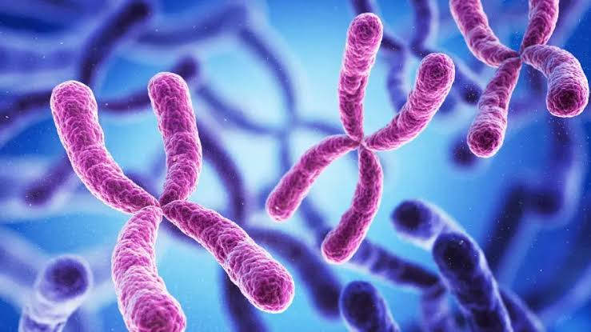
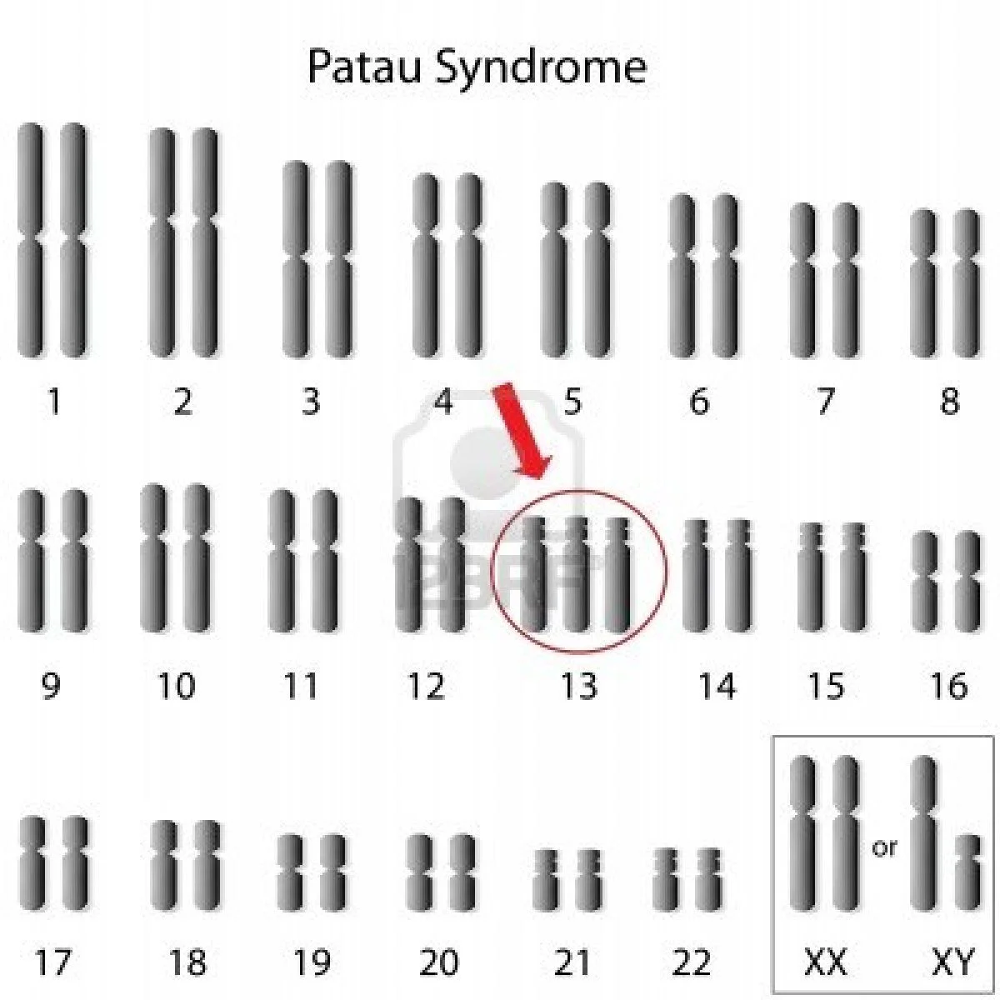

O que é?
A Síndrome de Patau, ou trissomia 13, é uma doença genética rara descoberta por Klaus Patau em 1960 e que ocorre em 1 em cada 5.000 recém-nascidos. É uma condição muito grave, que leva a diversas complicações. O diagnóstico pode ser feito ainda durante a gestação e o tratamento consiste em aliviar os sintomas.
Qual a causa?
A causa da síndrome de Patau é a presença de um cromossomo 13 adicional. Em vez do paciente apresentar 46 cromossomos (22 pares de autossomos, mais os 2 cromossomos sexuais), ele usualmente apresenta 47 cromossomos, tendo um trio (e não um par) do cromossomo 13. Esses casos são chamados de trissomia “livre”. Algumas vezes esse cromossomo 13 adicional pode não estar livre na célula e sim ligado a algum outro cromossomo, sendo chamado de trissomia por “translocação”.
Sintomas e caracteristicas
Os principais sintomas das crianças que nascem com a síndrome é o atraso mental e cognitivo, além de malformações físicas perceptivas. Veja abaixo quais são os principais indícios de quem vive com a síndrome de Patau:
Tratamento
Não existe um tratamento ou cura para a síndrome, apenas um acompanhamento que deve ser realizado de maneira incisiva e diária. Como os riscos são de grande proporção, a criança não costuma passar dos primeiros anos de vida - a maioria só vive até os 10 anos de idade.
Como descobrir no pré-natal?
Realizar o pré-natal corretamente traz diversos benefícios, pois é nessa fase que a mulher pode identificar problemas na sua gestação, seja na sua própria saúde ou na da criança. É muito importante que esses exames sejam realizados nas primeiras semanas e seguidos de repetições trimestrais.
Há fatores de risco?
Não existe uma causa comprovada da doença, mas estima-se que ela ocorre com mais frequência em mulheres que engravidam após os 35 anos de idade. Normalmente, a partir dos 32 anos a fertilidade feminina começa a cair gradualmente, acelerando a partir dos 35, por isso complicações podem ocorrer.
Outro fator são doenças hereditárias que os pais podem carregar em seus DNAs de maneira assintomática. Apesar dessa anomalia não ser hereditária, isso pode contribuir para o nascimento de uma criança com a síndrome de Patau.
É fundamental que todos os laboratórios estejam preparados para detectar e auxiliar os pais desde o descobrimento até o acompanhamento quando os casos são confirmados. Por isso, é imprescindível que os laboratórios possuam uma tecnologia de ponta, além de profissionais qualificados. Ter uma equipe preparada deixará os pais e familiares da criança que contém a síndrome mais tranquilos, afinal, não será um período fácil.
Bibliografia
Textos:
Geneone (Clique aqui!)
Diagnóstico do Brasil (Clique aqui!)